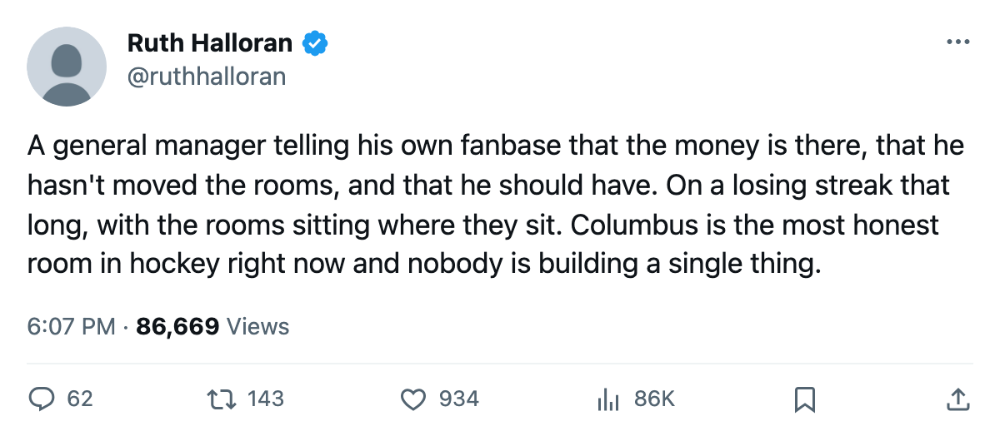
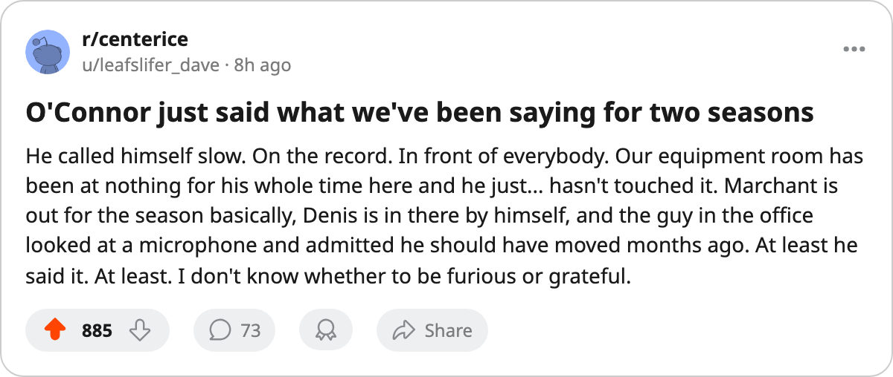

Equipment at Zero: Columbus Has Moved 2 Tracks in 11 Months on a $62.03M Payroll
Brent O'Connor told The Tunnel the money is there. The Columbus Blue Jackets carry the lowest club morale in the league, sit on 8 straight losses, and run a minus-15 live sum across the 4 tracks that actually move a player's numbers.
 Ruth HalloranBusiness of hockey · The Building
Ruth HalloranBusiness of hockey · The Building
Columbus has upgraded 2 facility tracks since the upgrade record opened in December 2004. The payroll is $62.03M, 8th of 30 clubs. The 4 tracks that shift player attributes sum to minus 15. The equipment room, which governs agility, acceleration, balance and shot accuracy in every game, sits at level zero, the floor of the scale.
Brent O'Connor spoke to The Tunnel's Marcus Bell on November 26. "The equipment room has been zero since I've been here. I moved travel and workout up in May, that's it. Everything else is sitting where it was."
"The money is there. That's the honest answer and it's not one I like giving because it makes me look slow. I know what the rooms should be. I know what they cost in terms of what the guys feel every morning. I just haven't moved on it and I should've."
The 4 live tracks carry modifiers from the league's tuning file. Equipment at level 0 costs 6 points on agility, acceleration, balance and shot accuracy. Workout at level 2 costs 3 points on strength, checking and endurance. Practice at level 1 costs 4 points on every attribute at home. Travel at level 2 costs 2 points on every attribute on the road.  Columbus Blue Jackets collects all 4 penalties every night, home or away.
Columbus Blue Jackets collects all 4 penalties every night, home or away.
One event, 2 tracks, 6 months ago
The upgrade record at Columbus shows a single compound event between May 29 and May 31: travel from 1 to 2 and workout from 1 to 2. No facility change has been filed since. O'Connor called himself slow on The Tunnel, and the record agrees with the timeline.
 Tampa Bay Lightning spends $59.79M and has raised its practice rink in February, its equipment room in May, and its travel budget in October. The live sum at Tampa Bay is -11, 4 points better than Columbus, on a payroll $59.79M to $62.03M. Tampa Bay holds 27 points.
Tampa Bay Lightning spends $59.79M and has raised its practice rink in February, its equipment room in May, and its travel budget in October. The live sum at Tampa Bay is -11, 4 points better than Columbus, on a payroll $59.79M to $62.03M. Tampa Bay holds 27 points.
 Pittsburgh Penguins spends $48.92M, runs a -12 live sum, and has moved its equipment room in May and its locker room in late October. Pittsburgh sits at 31 points in 22 games, 6th in the Atlantic.
Pittsburgh Penguins spends $48.92M, runs a -12 live sum, and has moved its equipment room in May and its locker room in late October. Pittsburgh sits at 31 points in 22 games, 6th in the Atlantic.
The clubs around Columbus on the payroll
| Club | Payroll | Live Sum | Pts | Per Point | Equip | Workout | Practice | Travel |
|---|---|---|---|---|---|---|---|---|
 Detroit Red Wings Detroit Red Wings | $63.16M | -13 | 29 | $2.18M | 1 | 1 | 5 | 0 |
| Columbus Blue Jackets | $62.03M | -15 | 25 | $2.48M | 0 | 2 | 1 | 2 |
 New York Islanders New York Islanders | $61.02M | -12 | 27 | $2.26M | 0 | 1 | 3 | 3 |
 Boston Bruins Boston Bruins | $60.32M | -14 | 29 | $2.08M | 0 | 0 | 1 | 5 |
| Tampa Bay Lightning | $59.79M | -11 | 27 | $2.21M | 3 | 0 | 3 | 1 |
 Ottawa Senators Ottawa Senators | $59.27M | -13 | 19 | $3.12M | 1 | 2 | 1 | 2 |
Detroit's practice rink is at level 5, the only one in this group above level 2, and the Red Wings are 9-3 at home. Columbus's practice rink sits at level 1, and the Blue Jackets are 7-6 at home. Tampa Bay's equipment room is the only one above level 0 in this set. Columbus's is at zero.
What a point costs in Columbus
The per-point figure at Columbus Blue Jackets is $2.48M, 20th of 30 clubs. Pittsburgh pays $1.58M a point on $48.92M and has 31 points. Nashville pays $1.60M on $51.22M, runs a -10 live sum (the 3rd-best facility build in the league), and sits at 32 points in the 2nd spot in the Central. Columbus spends $62.03M, collects 7 fewer points than Nashville, and runs a live sum 5 points worse.
The morale table puts Columbus at 85.6, the lowest club average in the league. Atlanta is next at 87.6.  Marc Denis92, the goaltender carrying an $8.12M contract, reads 70, the single lowest morale among all players in the league. The locker room track carries a level and a morale curve in the tuning file, but nothing in this pipeline reads either, so nothing can be said about what raising it would do.
Marc Denis92, the goaltender carrying an $8.12M contract, reads 70, the single lowest morale among all players in the league. The locker room track carries a level and a morale curve in the tuning file, but nothing in this pipeline reads either, so nothing can be said about what raising it would do.
The 4 tracks O'Connor controls, the 4 that move attribute ratings on the ice, are where the penalties sit. He said on The Tunnel that he should have moved and hasn't. Since the interview, the league has filed a facility upgrade at Montreal (equipment, between November 30 and December 1) and none at Columbus.
Columbus Blue Jackets is 7-9-3, 25 points, 4th in the Central, 8 straight losses. The revenue line reads $47.37M, the profit $22.37M. The building holds 15,007 at $83 a seat. The money is in the building. The equipment room is where it has always been.

